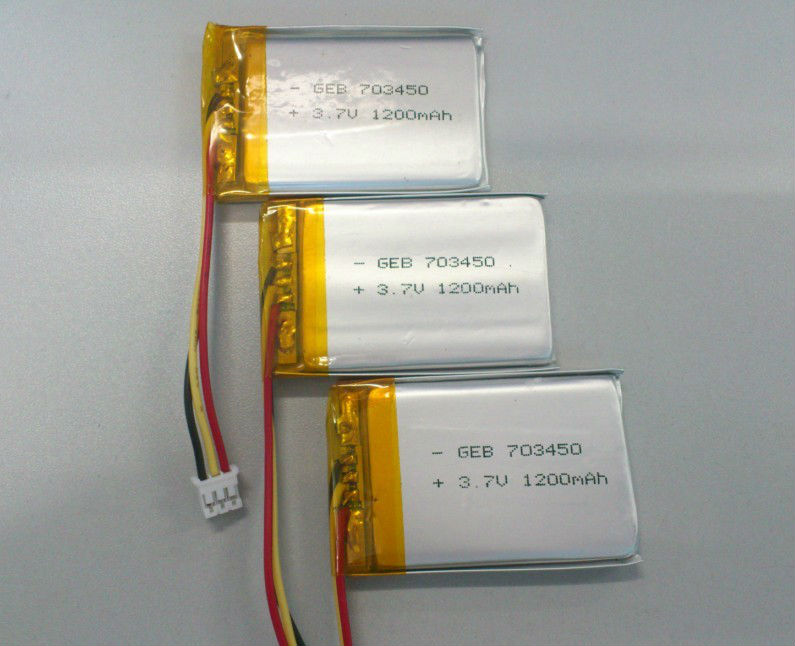

A drone, in technological terms, is an unmanned aircraft. ... Essentially, a drone is a flying robot that can be remotely controlled or fly autonomously through software-controlled flight plans in Embedded systems, working in conjunction with onboard sensors and GPS.In our Embedded systems course, we have made Drone as Semester Project under supervision of Sir Dr.Muhammad Asim Samejo and Sir Engr Nadir Ali.Visit More about Drones & Uavs.com!


Below are the FAB LAB SUKKUR IBA machine names which played a vitol role, in mini drone making. Learn More about sukkur IBA Fablab machines.com!
Setting FR4(fire Resistive sheet) for PCB board.
MULTIWII Platform is more easy for beginners (like us) to pick up and work with.
MULTIWII is an Open Source Platform which enables GUI & the user to visualize the flight control of the drone, it also allows users to easily tune t P(PROPORTINAL), I(INTEGRAL) & D(DERIVATIVE) parameters of Drones so that it could have a STABLE FLIGHT
Learn More About Multiiwii.com!
Moreover, besdies Multiwii, there are many other platforms avalaible for making Drones like EspCopter using wifimodules of esp8266 & esp32
To learn more about EspCopters please visit here
Learn More About Espcopter using esp8266.com!
High-level design (HLD) explains the architecture that would be used to develop a system. The architecture diagram provides an overview of an entire system, identifying the main components that would be developed for the product and their interfaces.
Visit More about High level Diagram.com!

More details can be found here
 For further details please refer here
For further details please refer here
In the above figure we can see there is an Arduino Nano that is placed at the center and the rest of components are connected to it. Though in our case, we have made our own flight controller but the microcontroller that we have used is the same as the one used in the Arduino Nano. Thus the pins, like GPIO, PWM, SCL and SDA, are the same due to same microcontroller ATmega328p. There are four mosfets connected to each of the four motors to control their speed. Thus we can control the speed of motors by changing the duty cycle of PWM signals. On the bottom side there is receiver FS-A8S which is connected to the interrupt pin of Arduino Nano (pin 02). As this receiver is PPM based, so it requires only a single wire to transfer all the data of eight channels collectively.
Length = 31.5 mm, width= 5mm, Rpm= 50,000 Rev/min For further details please refer here
Diameter of properllers is 2 mm

Before designing Pcb on Eagle software, we should learn the BOM(bill of material) required for making flight controller board
Bill Of Material:;

For further details please refer here

Schematic design using Atmega 328p Microcontroller, before designing the board, we should keep in mind the pin diagram of ICVisit More about how to Design PCB.com!
Schematic + BRD diagram of PCB on EAGLE 7.1/ EAGLE 9.5.;
Open up Eagle software in your pc click on File and then to create a new project by selecting New Project option. Then we need to name the file and click on the project to create new schematic. A new schematic window will open with a blank work space. This is called the Schematic Editor, where can draw schematics of our design. Next is to save the schematic file with extension .sch. We started our work by first reading the datasheet of the required components. Then we simply added our desired components to the schematic. For adding any component to Schematic one need to have the basic knowledge of Certain Package containing that contain the required components. For this we need to, select Add option from the side tool bar. A new window opens with a list of all the components available in the libraries. Then we need to just select the desired components and add it to the schematic. We added AT Mega 328P Microcontroller, Resistors, Capacitors, Voltage Regulator, Female Connectors, Push Button in our schematic.

Then the Next step includes connecting the components. For this we need to use net to sketch a small wires from the terminal of components. Then we need to use the Label command and connect a label to each end of the wire. When we click on a lablel, it will pop-up a rename pane, so there we can give a name to label. In order to connect the components, we just need to name the two or more labels.After making all the connections, the final schematic looked like the figure below. Then we simply saved the schematic file
The dimensions of micro-controller board are 31.75x31.75 mm
Traces and Drills;
After completing the schematic, we have to proceed with the design of the PCB layout. For that we need to select the switch to board option from the top tool bar. We can create the board file from the schematic. A new window will appear, which is the PCB layout editor. The black space is the board area and all the components are at the outside bottom left of the board area. Now, we need to place the components in to the editor. Now, by using the group option from the side tool bar, we need to select all the components and using move option we need to move all the components to board area. Then we need to separate the components so that the yellow color lines called air wires can be clearly visible and then we need to place the components according to our design requirements.


Setting FR4(fire resistive 4 pcb sheet):;
Final PCB board printed(2 layer Pcb) 2x2:
Next step was PCB milling on SRM 20 available in FAB Lab. Milling process consist of several steps including: Creating files for traces, holes, and outline of PCB.

SMD Componenets
Soldering Compenents:;

Booting Loading in Flight Controller ;
For boot loading the fresh microcontroller, just connect the avr isp board with main pcb (uController), connect both devices to the PCs usb ports.Visit More about BOOTLOAD CODE!
Finalized Flight controller board Checking continuity of Pcb Board Vcc, GND, SCL(A5) & SDA (A4), pins are usefullearn More about MPU6050 GYRO Sensor learn about Fly Sky Transmitter 1) Gyro sensor testing with arduino: After, proper connections, and code uploading(successfully), , the output was like this on GUI: Yaw, pitch, & roll rough values Problems that we faced while working on Config GUI:We struggled a lot when we were performing the first test with Config GUI. We tested a simple code for MPU6050, which is mentioned below, but we didn't get any output at the GUI interface. At first, the GUI was not even displayed on the console and when we clicked on it, it suddenly disappeared from the computer screen. We searched on dozens of online sources only to find that the GUI software is only supported by 32 bit operating systems and not 64 bit operating systems. 2) Reciever + Transmitter testing with arduino: After making connections next we follwed the below mentioned steps: learn more about Reciever testing NOTE: In our case, three motors were working BEST( connected to transmitter using throttle control) while the 4th one was automatically working without transmitter, after debugging and checking the continuity with DMM, we came to know that, the 4th MOSFET was not soldered properly. So, we did it's soldering again, and then finally, it Worked. 3) Coreless motors + propellers testing with voltage supply:


Step 1:
Choose the right configuration of quadcopter. In our case it is x-configuration, so here we have uncommented #define QUADX. Rest of the code will remain the same.

Step 2:
Next step is to choose the maximum and minimum throttle values. We chose '0' Min throttle because want that quadcopter should not rotate until we arm the transmitter. Also we have selected 2000 max so that we will get full thrust maximum throttle.

Step 3:
In this part we have to select which circuit board we are using. In our case we have ATmega328p based flight controller, so we chose NANOWII this board is based on the same microcontroller .

Step 4:
The following lines apply only for specific receiver with only one PPM sum signal, on digital PIN 2. We need to select the right line depending on the radio brand we are using. As we were using the transmitter and receiver of FLY-SKY, so we chose the sencond option which matches the order of our receiver.

After successful testing of all components, the important part is hardware interface of all.For that, we have to follow below steps

Drones use PID control to adjust the attitude and altitude of the system and callibration of these parameters is very important to stablize the Drone. Stabilization is very important for any drone because it is inherently unstable due to its six degrees of freedom. So we need to use a mechanism, like PID control, to adjust the moments of the drone.
Firstly, we did hang our minidrone in the air using rubber bands/wires/threads in such a way that it can move in all three-axis so that we could check its Pitch, Yaw, and Roll controls. We did hang it around a chair + lamp,of fablab in such a way to see yaw pitch values in gui(multwii) using fly-sky transmitter
Second step is to conntect flight controller with the computer through FTDI cable.
One thing important to note here is that before connecting FTDI or any other USB cable with PC, battery from quadcopter should be removed, as it cause severe damage to PC.
Next step is to open the config GUI interface in pc and choose the exact port through which the flight controller is connected i.e. port 8, IN OUR CASE.

After this all connection, we need to first change the P values from GUI. In most of the cases we only change roll, pitch and yaw values from P settings. To change the values we need to click on a label, like roll, and slide the courser to the right or left to increase or decrease the values. At this moment we need to keep other parameters, I and D , at zero. When we kept the value of P very low, the quadcopter started to wobble, so we increased the P values to a point where it seems to be pretty stable. But when we increased the P values too much, the drone started shaking very quickly. By analyzing these moments we found the correct P values for our quadcopter and by pressing the write button, which is located at the bottom left of PID settings, we uploaded new PID values to our flight controller.
Next is to change I parameters. For this we need to keep I peramenters at a certain value and then apply an external force. If I values are correct, the drone will try to compensate for any change and try to recover its position. In our case we kept P parameter values greater than I parameter values so that P gain should be a little greater than I gain. If values are not set according to this condition, then the quadcopter overcorrects the angle and rather than being stable horizontally, it moves a little to the right side or left while recovering to its original position. After finding correct values we again pressed write button to save the new PID values.
Last step is to change D parameters. D settings are important if we want to make a quadcopter that performs complex maneuvers like very quick turns to left or right. If we can not adjust D parameters correctly than, while taking turns, our quadcopter will shake rather than being solid. For this we constantly monitored the behaviour of the quadcopter and adjusted D parameters. After this we again press the write button to save the new PID values.
further details of PID Configuration can be found here
Our Drone was all Ready and before final fly, we did face a small issue, that in start, the four motors were working smoothly but after couple of minutes, the battery get discharged quickly such that it only provides suitable supply to only three motors, we were not having much time as the other new battery was not avalaible easily in market. So, we ordered online some others of same volt 3.7v but with HIGH mAH (1200, 900, 1600) rather than the previous one which we were using 380mAH.

DIY Drone is easy to make and a hands-on project. We faced only 1 issue that our 3.7 V battery gets discharged quickly after few couple of minutes.Thus, in start it was providing full voltage to all 4 motors of quadcopter but later on to only 3 motors. Thus, we debug and got solution that one should use a 3.7V battery but with Higher current rating i.e. 1200mAH /900mAH.
The use of surveillance systems offers a number of benefits to the provision of air traffic services, both in the safety and the efficiency aspects. Drones have assumed a leading role in counterterrorism and counterinsurgency, and are projected to be of growing importance in future military operations.


Drones are playing important role in today's modern World. I along with my two group members, worked on making a UAV and the core idea behind the working of UAV's: To make a drone. This was an intricate and exciting task! We had to complete this project within the period of four months.
Besides having short period of time, we were so optimistic and keen to make functional pro. Thus, we made a DIY MINIDRONE using I2C protocols and learnt how to tackle the intricacies in circuit design, components interface, coding, case design etc.Moreover, we learnt many interesting thigs like using a lipo battery of High mAH rather than smaller mAH and a 32 bit operating system is more suitable than a 64 bit operating system fo MULTIWII CONFIG. Overall, If we would be given a chance of redoing this project again, we could have done manychanges like inclusion of drone camera, making it a bluetooth control or wifi control drone.This report can be a perfect guide for other aspirants of drones.
Intellectual property is a category of property that includes intangible creations of the human intellect. So it is important for businesses or for any person who want to launch a product, to understand intellectual property . In our case, we must need to understant that without the permission of owner, we can not use any pre-existing model or any piece of code, to make a product and commercialize it. We can not even use any content availiable on internet without giving the reference of owner. So we have tried our best to give the referances of content or design that we have used in this project.Moreover, our porject is Open source as the material was easily available on website and we credit to the orignal contributors of these all websites.Thus, making our work freely available for others to learn from our experience.freely Links for websites are mentioned below.